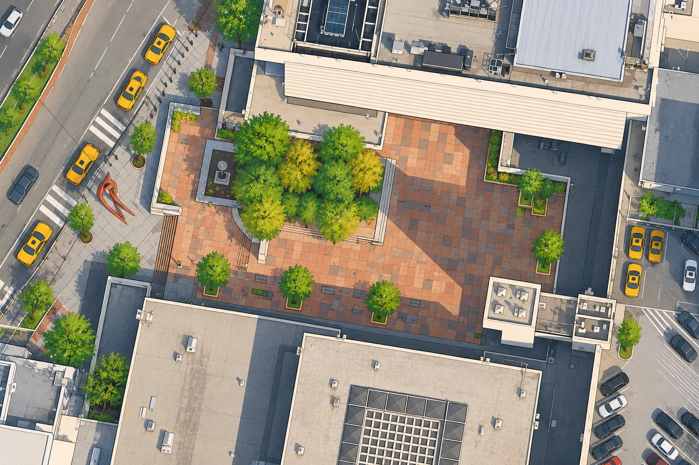

JSQ Plaza

EXPLORE THE PLAZA
Hover or click the + markers to explore
Who's around the plaza?Illustrative activity patterns, not measured counts
Walking throughWaiting for taxisCoffee stopVisiting shopsStanding / chattingWith luggage
